วัฒนธรรมคืออะไร?
วัฒนธรรม (Culture) หมายถึง ความดี ความงาม ความเจริญในชีวิตมนุษย์ ซึ่งปรากฏเป็นรูปต่างๆ เช่น ภาษา ขนบธรรมเนียมประเพณี ศิลปวิทยาการ ความเชื่อ การศาสนา เป็นต้น และได้ถ่ายทอดจากคนรุ่นหนึ่งไปยังรุ่นหลังๆต่อไปจนถึงปัจจุบัน วัฒนธรรมเป็น วิถีชีวิตของบุคคลในสังคมที่ได้สั่งสม เลือกสรร ปรับปรุง แก้ไขให้เหมาะสมกับสภาพแวดล้อม และรักษาไว้ให้เจริญงอกงาม ใช้เป็นแนวทางการอยู่ร่วมกันของสังคม วัฒนธรรมมีการพัฒนาเปลี่ยนแปลง ปรับปรุง สร้างสรรค์ให้เจริญงอกงามโดยสืบทอดจากมรดกวัฒนธรรมในอดีต หรืออาจจะรับเอาสิ่งที่เผยแพร่จากสังคมอื่นๆ เพื่อตอบสนองความต้องการของสังคม และทำให้สมาชิกยอมรับ เกิดความนิยม แล้วยังแสดงเอกลักษณ์ของชาติอีกด้วย
ประเภทของวัฒนธรรม
วัฒนธรรมแบ่งได้หลายประเภท ดังนี้
การแบ่งตามพระยาอนุมานราชธน
วัฒนธรรมทางวัตถุ (Material Culture): สิ่งที่จับต้องได้ สร้างขึ้นเพื่ออำนวยความสะดวก เช่น สิ่งของ
วัฒนธรรมทางจิตใจ (Non-Material Culture): สิ่งที่จับต้องไม่ได้ เกี่ยวข้องกับความคิดและจิตใจ เช่น ศาสนา ศีลธรรม จริยธรรม ศิลปะ วรรณคดี
การแบ่งตามลักษณะเนื้อหา
คติธรรม: หลักการดำเนินชีวิตจากศาสนา จิตใจ เช่น ความเมตตา ความกตัญญู.
เนติธรรม: กฎหมาย ระเบียบ ข้อบังคับ และประเพณีที่สำคัญ เช่น กฎหมายจราจร พิธีแต่งงาน.
สหธรรม: การปฏิสัมพันธ์ มารยาทในสังคม เช่น การเคารพผู้ใหญ่ การใช้คำพูด.
วัตถุธรรม: สิ่งของเครื่องใช้ที่มนุษย์ประดิษฐ์ขึ้นเพื่อความสะดวกสบาย.
การแบ่งตามรูปแบบการแสดงออก
วัฒนธรรมพิธีการ: พิธีกรรมที่ทำสืบต่อกันมา เช่น พิธีสงกรานต์
วัฒนธรรมสถาบัน: การจัดตั้งองค์กรเพื่อประโยชน์ส่วนรวม เช่น ครอบครัว ศาสนา
วัฒนธรรมการสื่อสาร: การจดบันทึกและการบอกเล่า
ลักษณะของวัฒนธรรม
ลักษณะของวัฒนธรรม มีลักษณะที่สำคัญดังนี้
1. วัฒนธรรมเป็นสิ่งที่มนุษย์สร้างขึ้น เพื่อตอบสนองความต้องการของสังคม เช่น การสร้างอาคาร บ้านเรือน คอมพิวเตอร์ หรือการแต่งเติมสิ่งที่เป็นธรรมชาติให้มีรูปร่างลักษณะใหม่
2. วัฒนธรรมที่เกิดจากการเรียนรู้ วัฒนธรรมไม่ใช่สิ่งที่ติดตัวมนุษย์มาแต่กำเนิดและไม่ใช่สิ่งที่ อาจถ่ายทอดทางพันธุกรรมได้วัฒนธรรมเป็นสิ่งที่สร้างมนุษย์โดยเด็กจะได้รับการอบรมเลี้ยงดูแลขัดเกลาสังคมจากพ่อแม่ ครูอาจารย์ เมื่อเด็กได้เรียนรู้สิ่งต่างๆ ก็ปรับปรุงพัฒนาความคิด ประดิษฐ์เป็นวัฒนธรรมใหม่ๆ
3. วัฒนธรรมเป็นสิ่งที่สมาชิกของสังคมยอมรับ เป็นส่วนร่วมและนำไปใช้ในการสร้างวัฒนธรรมใหม่ขึ้นมาเป็นแบบแผนการดำรงชีวิตร่วมกันของสมาชิกในสังคม
4. วัฒนธรรมเป็นสิ่งที่สั่งสมและถ่ายทอดให้แก่อนุชนรุ่นหลัง เป็นผลของการถ่ายทอดและการเรียนรู้จากสมาชิกรุ่นหนึ่งไปสู่สมาชิกอีกรุ่นต่อไป มีภาษาเป็นสื่อกลางช่วยใช้มนุษย์ได้แสดงความรู้สึกและสามารถเข้าใจผู้อื่นได้ วัฒนธรรมกลายเป็นองค์ความรู้ของสังคม
5. วัฒนธรรมมีการเปลี่ยนแปลงอยู่เสมอ ตามกาลเวลาที่สอดคล้องกับธรรมชาติรอบข้างและ ความต้องการของสมาชิกในสังคม บุคคลที่เกิดในสังคมใดก็ต้องเรียนรู้วัฒนธรรมของสังคมนั้น ซึ่งแตกต่างกันไปตามแต่ละสังคม ไม่สามารถนำมาเปรียบเทียบได้ว่าของใครดีกว่ากัน เพราะแต่ละวัฒนธรรมย่อมมีความเหมาะสมตามสภาพแวดล้อมของแต่ละสังคม
ความสำคัญของวัฒนธรรม
ความสําคัญของวัฒนธรรม มีอยู่ 6 ประการ คือ
1.วัฒนธรรมช่วยสร้างระเบียบให้กับสังคม โดยเป็นตัวกำหนดแบบแผนพฤติกรรมของสมาชิกในสังคม รวมถึงการสร้างแบบแผนของความคิด ความเชื่อ และค่านิยมของสมาชิกให้อยู่ในรูปแบบเดียวกัน
2. วัฒนธรรมช่วยให้เกิดความสามัคคี สังคมที่มีวัฒนธรรมเดียวกันย่อมจะมีความรู้สึกผูกพัน เกิดความเป็นปึกแผ่น อุทิศตนให้กับสังคมทำให้สังคมอยู่รอด
3. วัฒนธรรมเป็นตัวกำหนดรูปแบบของสถาบัน ได้แก่ รูปแบบของสถาบันครอบครัว ลักษณะของครอบครัวแต่ละสังคมต่างกันไป เนื่องจากวัฒนธรรมในสังคมเป็นตัวกำหนดรูปแบบ เช่น วัฒนธรรมแบบสามีภรรยาเดียว
4. วัฒนธรรมเป็นเครื่องแสดงเอกลักษณ์ของชาติ ชาติที่มีวัฒนธรรมสูง ย่อมได้รับการยกย่องและเป็นหลักประกันความมั่นคงของชาติ
5. วัฒนธรรมช่วยให้ประเทศชาติเจริญก้าวหน้า หากสังคมใดมีวัฒนธรรมที่ดีงามเหมาะสม เช่น ความมีระเบียบวินัย ขยัน อดทน เห็นประโยชน์ส่วนรวมมากกว่าประโยชน์ส่วนตน สังคมนั้นย่อมจะเจริญก้าวหน้าได้อย่างรวดเร็ว
6. วัฒนธรรมเป็นเครื่องมือในการแก้ไขปัญหา มนุษย์ไม่สามารถดำรงชีวิตภายใต้สิ่งแวดล้อมได้อย่างสมบูรณ์ ดังนั้นมนุษย์ต้องแสวงหาความรู้จากประสบการณ์ที่ตนได้รับ ให้เกิดประโยชน์ต่อชีวิตและถ่ายทอดจากสมาชิกรุ่นหนึ่งไปสู่สมาชิกรุ่นต่อไปได้
วัฒนธรรมตะวันตก
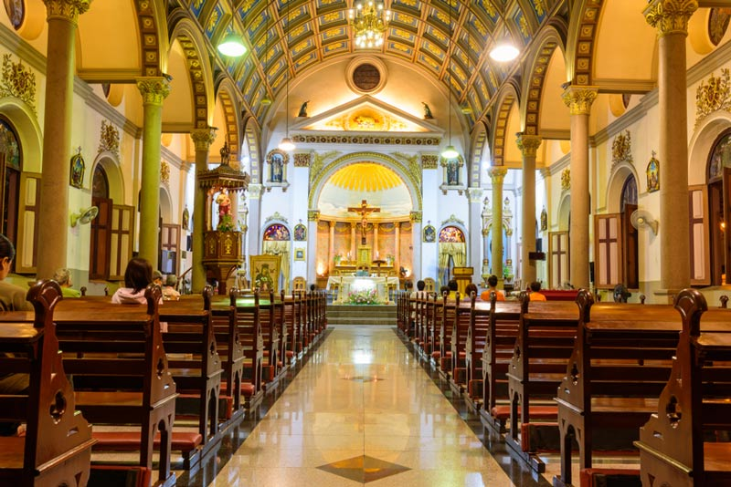
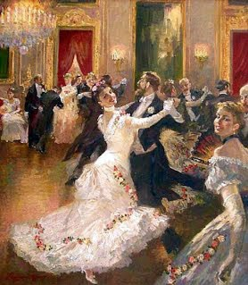
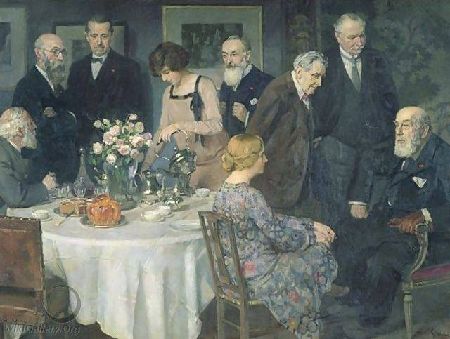
วัฒนธรรมตะวันตกหรือที่รู้จักกันในชื่ออารยธรรมตะวันตกอารยธรรมยุโรปวัฒนธรรมตะวันตกสังคมตะวันตกหรือเรียกง่ายๆ ว่าตะวันตกคือวัฒนธรรมที่มีความหลากหลายภายในของโลกตะวันตกคำว่า "ตะวันตก" ครอบคลุมถึงบรรทัดฐานทางสังคม ค่านิยม ทางจริยธรรมขนบธรรมเนียมประเพณีระบบความเชื่อระบบการเมืองสิ่งประดิษฐ์และเทคโนโลยีต่างๆที่มีรากฐานมาจาก ประวัติศาสตร์ ของยุโรปและเมดิเตอร์เรเนียน เป็นหลัก "วัฒนธรรมตะวันตก" เป็นแนวคิดที่กว้างขวาง ไม่ได้เกี่ยวข้องกับภูมิภาคที่มีสมาชิกที่แน่นอนหรือขอบเขตทางภูมิศาสตร์ โดยทั่วไปแล้วหมายถึงวัฒนธรรมในยุคคลาสสิกของกรีกโบราณโรมันโบราณและผู้สืบทอดที่เป็นคริสเตียนซึ่งขยายตัวไปทั่วลุ่มน้ำเมดิเตอร์เรเนียนและยุโรป และต่อมา ได้แพร่กระจายไปทั่วโลกโดยส่วนใหญ่ผ่านการล่าอาณานิคมและโลกาภิวัตน์
ในเชิงประวัติศาสตร์ นักวิชาการมักเชื่อมโยงแนวคิดเรื่องวัฒนธรรมตะวันตกเข้ากับยุคคลาสสิกของกรีก-โรมันโบราณอย่างใกล้ชิด นอกนั้นยังยอมรับว่าวัฒนธรรมอื่นๆ เช่นอียิปต์โบราณและวัฒนธรรมตะวันออกใกล้มีอิทธิพลต่อวัฒนธรรมตะวันตก ยุคเฮลเลนิสติกยังส่งเสริมการผสมผสานทางวัฒนธรรมโดยผสมผสานวัฒนธรรมกรีก โรมัน และยิว ความก้าวหน้าครั้งสำคัญในด้านวรรณกรรม วิศวกรรม และวิทยาศาสตร์ได้หล่อหลอม วัฒนธรรม ยิวในยุคเฮลเลนิสติก เป็นที่มาของชาวคริสต์ยุคแรกและพันธสัญญาใหม่ฉบับภาษากรีก การเผยแพร่ศาสนาคริสต์ในยุโรปในช่วงปลายยุคโบราณจะทำให้ศาสนาคริสต์โดยเฉพาะอย่างยิ่งคริสตจักรคาทอลิกยังคงเป็นพลังสำคัญในวัฒนธรรมตะวันตกต่อไปอีกหลายศตวรรษ วัฒนธรรมตะวันตกยังคงพัฒนาต่อไปในช่วงยุคกลางในฐานะการปฏิรูปที่เกิดจากยุคฟื้นฟูศิลปวิทยาการในยุคกลางอิทธิพลของโลกอิสลามผ่านทางอัลอันดาลุสและซิซิลี (รวมถึงการถ่ายทอดเทคโนโลยีจากตะวันออก และการแปลตำราวิทยาศาสตร์และปรัชญา ภาษาอาหรับ เป็น ภาษาละติน โดยนักปรัชญากรีกและอิสลามที่ได้รับอิทธิพลจากกรีก)และ ยุคฟื้นฟูศิลปวิทยาการของอิตาลีเมื่อนักวิชาการกรีกที่หลบหนีจากการล่มสลายของคอนสแตนติโนเปิลนำตำรากรีกและโรมันโบราณกลับมายังยุโรปกลางและตะวันตกศาสนาคริสต์ในยุคกลางได้รับการยกย่องว่าได้สร้างมหาวิทยาลัย สมัยใหม่ ระบบโรงพยาบาลสมัยใหม่ ]เศรษฐศาสตร์เชิงวิทยาศาสตร์และกฎธรรมชาติ
วัฒนธรรมยุโรปพัฒนาปรัชญาที่ซับซ้อนหลากหลาย ทั้งปรัชญาสกอลัสติกในยุคกลาง ลัทธิลึกลับและมนุษยนิยมแบบคริสเตียนและฆราวาสซึ่งเป็นพื้นฐานสำหรับการปฏิรูปศาสนาโปรเตสแตนต์ในศตวรรษที่ 16 ซึ่งเปลี่ยนแปลงชีวิตทางศาสนาและการเมืองไปอย่างสิ้นเชิง นำโดยบุคคลสำคัญอย่างมาร์ติน ลูเธอร์ศาสนาโปรเตสแตนต์ท้าทายอำนาจของคริสตจักรคาทอลิกและส่งเสริมแนวคิดเรื่องเสรีภาพส่วนบุคคลและการปฏิรูปศาสนาปูทางไปสู่แนวคิดสมัยใหม่เกี่ยวกับความรับผิดชอบส่วนบุคคลและการปกครอง ยุคเรืองปัญญาในศตวรรษที่ 17 และ 18 ได้เปลี่ยนจุดสนใจไปที่เหตุผลวิทยาศาสตร์และสิทธิส่วนบุคคลซึ่งส่งผลต่อการปฏิวัติทั่วทั้งยุโรปและอเมริกา และการพัฒนาสถาบันประชาธิปไตยสมัยใหม่ นักคิดในยุคเรืองปัญญาได้ส่งเสริมอุดมการณ์ของความหลากหลายทางการเมืองและการสืบสวนเชิงประจักษ์ซึ่งเมื่อรวมกับการปฏิวัติอุตสาหกรรมได้เปลี่ยนแปลงสังคมตะวันตก ในศตวรรษที่ 19 และ 20 อิทธิพลของเหตุผลนิยมในยุคเรืองปัญญายังคงดำเนินต่อไปพร้อมกับการเพิ่มขึ้นของฆราวาสนิยมและประชาธิปไตยเสรีนิยมในขณะที่การปฏิวัติอุตสาหกรรมกระตุ้นการเติบโตทางเศรษฐกิจและเทคโนโลยี การขยายตัวของสิทธิพลเมืองและการลดลงของอำนาจทางศาสนาได้บ่งบอกถึงการเปลี่ยนแปลงทางวัฒนธรรมที่สำคัญ แนวโน้มที่กำหนดสังคมตะวันตกสมัยใหม่ ได้แก่ แนวคิดเรื่องความหลากหลายทางการเมืองปัจเจกนิยม วัฒนธรรมย่อยหรือวัฒนธรรมต่อต้านที่โดดเด่นและการผสมผสาน ทางวัฒนธรรมที่เพิ่มขึ้น อันเป็นผลมาจากโลกาภิวัตน์และการ อพยพ
อารยธรรมยุคแรกสุดที่มีอิทธิพลต่อการพัฒนาวัฒนธรรมตะวันตกคืออารยธรรมเมโสโปเตเมียซึ่งเป็นพื้นที่ของระบบแม่น้ำไทกริส-ยูเฟรติสซึ่งส่วนใหญ่ตรงกับประเทศอิรักในปัจจุบันซีเรียตะวันออกเฉียงเหนือตุรกี ตะวันออกเฉียง ใต้และอิหร่านตะวันตกเฉียงใต้ถือเป็นแหล่งกำเนิดอารยธรรมอียิปต์โบราณก็มีอิทธิพลอย่างมากต่อวัฒนธรรมตะวันตกเช่นกัน ลัทธิพาณิชยนิยม ของฟีนิเชียและการนำอักษรมาใช้ช่วยส่งเสริมการก่อตั้งรัฐในทะเลอีเจียนและอิตาลีในปัจจุบันและสเปนในปัจจุบัน ก่อให้เกิดอารยธรรมในทะเลเมดิเตอร์เรเนียน เช่นคาร์เธจโบราณกรีกโบราณเอทรูเรียและโรมโบราณ ชาวกรีกเปรียบเทียบตนเองกับทั้งเพื่อนบ้านทางตะวันออก (เช่นชาวทรอยในอีเลียด) และเพื่อนบ้านทางเหนือ ซึ่งพวกเขาถือว่าเป็นคนป่าเถื่อนแนวคิดเกี่ยวกับสิ่งที่เรียกว่าตะวันตกเกิดขึ้นจากมรดกของ จักรวรรดิโรมัน ตะวันตกและตะวันออก ต่อมา แนวคิดเกี่ยวกับตะวันตกได้ก่อตัวขึ้นจากแนวคิดของคริสต์ศาสนาละตินและจักรวรรดิโรมันอันศักดิ์สิทธิ์สิ่งที่คิดว่าเป็นความคิดแบบตะวันตกในปัจจุบันมีต้นกำเนิดมาจาก ประเพณี ของกรีก-โรมันและคริสต์ศาสนาเป็นหลัก โดยมีอิทธิพลจาก ชาว เยอรมันเซลติกและสลาฟ ในระดับที่แตกต่างกัน และรวมถึงอุดมคติของยุคกลาง ยุคฟื้นฟูศิลปวิทยาการปฏิรูปศาสนาและ ยุคเรืองปัญญา


ภูมิภาคทางตะวันตกของทะเลเมดิเตอร์เรเนียนในสมัยโบราณ
ในยุคกรีก-โรมันแอฟริกาเหนือและภูมิภาคตะวันตกของตะวันออกกลางเป็นส่วนสำคัญของอารยธรรมตะวันตก เนื่องจากอิทธิพลของ วัฒนธรรมกรีก และอิทธิพลทางวัฒนธรรมโดยตรงจากการพิชิตของจักรวรรดิโรมัน หลังจากการพิชิตของโรมัน ทะเลเมดิเตอร์เรเนียนทั้งหมดกลายเป็นทะเลภายในของโรมันโดยพื้นฐาน การพิชิตของอเล็กซานเดอร์นำไปสู่การกำเนิดของอารยธรรมเฮลเลนิสติกซึ่งแสดงถึงการผสมผสานระหว่างวัฒนธรรมกรีกและตะวันออกใกล้ในภูมิภาคเมดิเตอร์เรเนียนตะวันออก อารยธรรมตะวันออกใกล้ของอียิปต์โบราณและเลแวนต์ซึ่งอยู่ภายใต้การปกครองของกรีก กลายเป็นส่วนหนึ่งของโลกเฮลเลนิสติก ศูนย์กลางการเรียนรู้ที่สำคัญที่สุดของเฮลเลนิสติกคืออียิปต์สมัยราชวงศ์ปโตเลมี ซึ่งดึงดูด นักวิชาการชาวกรีกอียิปต์ยิวเปอร์เซียฟีนิเชียและแม้แต่ ชาว อินเดีย วิทยาศาสตร์ ปรัชญาสถาปัตยกรรม วรรณกรรมและศิลปะ ของเฮลเลนิสติก ในภายหลังได้วางรากฐานที่จักรวรรดิโรมัน นำมาใช้และต่อยอด เมื่อเข้ายึดครองยุโรปและโลกเมดิเตอร์เรเนียนรวมถึงโลกเฮลเลนิสติกในการพิชิตในช่วงศตวรรษที่ 1 ก่อนคริสต์ศักราช
ศาสนาเพแกนของกรีกและโรมันค่อยๆ ถูกแทนที่ด้วยศาสนาคริสต์ ด้วยพระราชกฤษฎีกาแห่งเทสซาโลนิกาทำให้ ศาสนาคริสต์นิกายคาทอลิกเป็นศาสนาประจำรัฐของจักรวรรดิโรมัน ทำหน้าที่เป็นพลังแห่งการรวมเป็นหนึ่งเดียวในส่วนที่เป็นคริสเตียนของยุโรป ประเพณีคริสเตียนของชาวยิวซึ่งเป็นต้นกำเนิดของศาสนาคริสต์นิกายคาทอลิกนั้นแทบจะสูญสิ้นไป และการต่อต้านชาวยิวก็ฝังรากลึกมากขึ้น ศิลปะและวรรณกรรม กฎหมาย การศึกษา และการเมืองส่วนใหญ่ได้รับการรักษาไว้ในคำสอนของศาสนจักร ปรัชญาและวิทยาศาสตร์ของกรีกคลาสสิกส่วนใหญ่ถูกลืมเลือนไปในยุโรปหลังจากการล่มสลายของจักรวรรดิโรมันตะวันตก ยกเว้นในกลุ่มอารามที่โดดเดี่ยวเช่นในไอร์แลนด์ ความรู้ของยุคโบราณคลาสสิกได้รับการอนุรักษ์ไว้ได้ดีกว่าในจักรวรรดิโรมันตะวันออก ประมวลกฎหมายแพ่งโรมันของจัสติเนียน ถูกสร้างขึ้นในเมืองคอนสแตนติโนเปิลและเมืองนั้นยังคงรักษาการค้าและการควบคุมทางการเมืองเป็นระยะๆ เหนือด่านต่างๆ เช่นเวนิสทางตะวันตกเป็นเวลาหลายศตวรรษ ความรู้ของกรีกคลาสสิกยังถูกรวมเข้าด้วยกัน อนุรักษ์ไว้ และพัฒนาในโลกตะวันออกที่กำลังเติบโต ซึ่งค่อยๆ เข้ามาแทนที่การควบคุมของโรมัน-ไบแซนไทน์ในฐานะพลังทางวัฒนธรรมและการเมืองที่โดดเด่น ด้วยเหตุนี้ ความรู้ส่วนใหญ่จากยุคโบราณจึงค่อยๆกลับคืนสู่อารยธรรมยุโรปในหลายศตวรรษหลังจากการล่มสลายของจักรวรรดิโรมันตะวันตก
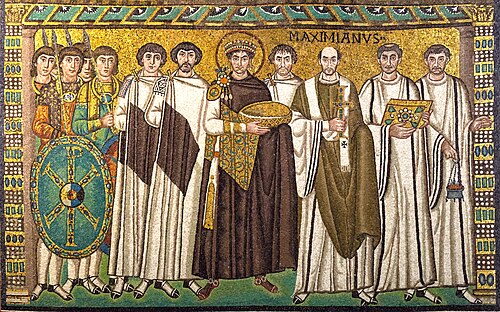
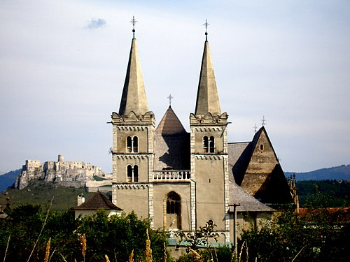
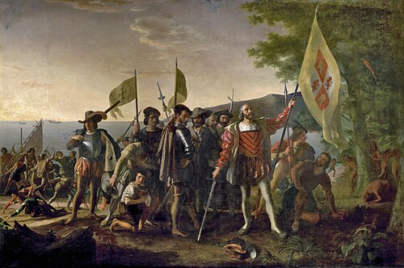
การกำเนิดของยุโรปตะวันตกในยุคกลาง
หลังจากการล่มสลายของกรุงโรมศิลปะ วรรณกรรม วิทยาศาสตร์ และแม้แต่เทคโนโลยีของกรีก-โรมันส่วนใหญ่ก็สูญหายไปในส่วนตะวันตกของจักรวรรดิเก่า แต่กลับกลายเป็นศูนย์กลางของโลกตะวันตกใหม่ ยุโรปตกอยู่ในภาวะอนาธิปไตยทางการเมือง มีอาณาจักรและแคว้นต่างๆ ทำสงครามกันมากมาย ในที่สุดภายใต้การปกครองของกษัตริย์แฟรงก์ ยุโรปก็รวมเป็นหนึ่งเดียวอีกครั้ง แต่ก็เพียงบางส่วน และภาวะอนาธิปไตยก็พัฒนาไปสู่ระบบศักดินา ตะวันตกในยุคกลางหมายถึงตะวันตกคาทอลิก "ละติน" โดยเฉพาะ ซึ่งเรียกอีกอย่างว่า "แฟรงก์" ใน รัชสมัยของ ชาร์เลมาญตรงกันข้ามกับตะวันออกออร์โธดอกซ์ ซึ่งภาษากรีกยังคงเป็นภาษาของจักรวรรดิไบแซนไทน์ แนวคิดที่เก่าแก่ที่สุดที่บันทึกไว้เกี่ยวกับยุโรปในฐานะขอบเขตทางวัฒนธรรม (แทนที่จะเป็นเพียงคำศัพท์ทางภูมิศาสตร์) เกิดขึ้นโดยอัลคูอินแห่งยอร์กในช่วงปลายศตวรรษที่ 8 ในช่วงยุคฟื้นฟูศิลปวิทยาการแคโรลิงเจียนโดยจำกัดเฉพาะดินแดนที่นับถือศาสนาคริสต์นิกายตะวันตกในขณะนั้น คำว่า "ยุโรป" ในฐานะคำศัพท์ทางวัฒนธรรมไม่ได้รวมถึงดินแดนส่วนใหญ่ที่คริสตจักรนิกายออร์โธดอกซ์เป็นศาสนาหลักจนกระทั่งศตวรรษที่ 19 รากฐานส่วนใหญ่ของโลกวัฒนธรรมหลังยุคโรมันได้ถูกวางไว้ก่อนการล่มสลายของจักรวรรดิโรมันตะวันตก โดยส่วนใหญ่มาจากการบูรณาการและการปรับเปลี่ยนแนวคิดของโรมันผ่านความคิดของศาสนาคริสต์ คริสต จักรนิกายออร์โธดอกซ์ตะวันออก ได้ก่อตั้งมหาวิหารอารามและโรงเรียนสอนศาสนาจำนวนมาก ซึ่งบางแห่งยังคงมีอยู่จนถึงทุกวันนี้
การค้นพบประมวลกฎหมายจัสติเนียนอีกครั้งในยุโรปตะวันตกในช่วงต้นศตวรรษที่ 10 ได้จุดประกายความสนใจในศาสตร์แห่งกฎหมายอีกครั้ง ซึ่งข้ามพรมแดนระหว่างตะวันออกและตะวันตกที่กำลังเปลี่ยนแปลงไป ในโลกตะวันตก ที่เป็น คาทอลิกหรือแฟรงก์กฎหมายโรมันกลายเป็นรากฐานที่แนวคิดและระบบกฎหมายทั้งหมดตั้งอยู่ อิทธิพลของกฎหมายโรมันพบได้ในระบบกฎหมายตะวันตกทั้งหมด แม้ว่าจะแตกต่างกันในรูปแบบและขอบเขตก็ตาม การศึกษากฎหมายศาสนาซึ่งเป็นระบบกฎหมายของคริสตจักรคาทอลิก ได้หลอมรวมกับกฎหมายโรมันเพื่อเป็นพื้นฐานของการก่อตั้งวงการวิชาการกฎหมายตะวันตกขึ้นใหม่ ตั้งแต่ปลายยุคโบราณผ่านยุคกลาง และต่อมา ในขณะที่ยุโรปตะวันออกได้รับการหล่อหลอมโดย คริสตจักรนิกายออร์โธดอกซ์ตะวันออก ยุโรปใต้และยุโรปกลางก็มีเสถียรภาพมากขึ้นโดยคริสตจักรคาทอลิกซึ่งเมื่อการปกครองของจักรวรรดิโรมันจางหายไป ก็เป็นพลังที่มั่นคงเพียงอย่างเดียวในยุโรปตะวันตกในปี ค.ศ. 1054 เกิดการแตกแยกครั้งใหญ่ซึ่งตามมาจาก การแบ่งแยก กรีกตะวันออกและละตินตะวันตกได้แบ่งยุโรปออกเป็นภูมิภาคทางศาสนาและวัฒนธรรมที่ยังคงมีอยู่จนถึงทุกวันนี้
ยุคกลางตอนปลาย (กรุงโรมและการปฏิรูปศาสนา) ในศตวรรษที่ 14 ยุคฟื้นฟูศิลปวิทยาการเริ่มต้นจากอิตาลีแล้วแพร่กระจายไปทั่วยุโรปมีการฟื้นฟูทางศิลป กระบวนการนี้ได้รับการส่งเสริมเพิ่มเติมโดยการอพยพของนักบวชและนักวิชาการคริสเตียนชาวกรีกไปยังเมืองต่างๆ ในอิตาลี เช่นฟลอเรนซ์และเวนิสหลังจากการสิ้นสุดของจักรวรรดิไบแซนไทน์ด้วยการล่มสลายของคอนสแตนติโนเปิล จนกระทั่งถึงยุคแห่งการตื่นรู้ วัฒนธรรมคริสเตียนได้เข้ามาเป็นพลังที่โดดเด่นในอารยธรรมตะวันตก ชี้นำทิศทางของปรัชญา ศิลปะ และวิทยาศาสตร์เป็นเวลาหลายปี ขบวนการต่างๆ ในศิลปะและปรัชญา เช่น ขบวนการ มนุษยนิยมในยุคเรเนสซองส์และ ขบวนการสกอลัสติกในยุคกลางตอนปลายได้รับแรงบันดาลใจจากแรงผลักดันในการเชื่อมโยงศาสนาคาทอลิกกับความคิดของกรีกและอาหรับที่นำเข้ามาโดยผู้แสวงบุญชาวคริสต์ อย่างไรก็ตาม เนื่องจากการแบ่งแยกในศาสนาคริสต์ตะวันตกที่เกิดจากการปฏิรูปโปรเตสแตนต์และการตรัสรู้ อิทธิพลทางศาสนา โดยเฉพาะอำนาจทางโลกของพระสันตะปาปา เริ่มเสื่อมถอยลง ในช่วงการปฏิรูปศาสนาและยุคเรืองปัญญา แนวคิดเรื่องสิทธิพลเมืองความเสมอภาคทางกฎหมายความยุติธรรมตามกระบวนการและประชาธิปไตยในฐานะรูปแบบสังคมในอุดมคติ เริ่มได้รับการสถาปนาเป็นหลักการที่เป็นพื้นฐานของวัฒนธรรมตะวันตกสมัยใหม่ โดยเฉพาะอย่างยิ่งในภูมิภาคที่นับถือศาสนาโปรเตสแตนต์
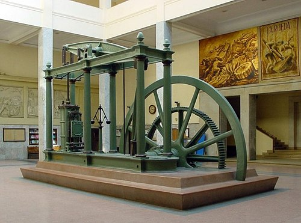
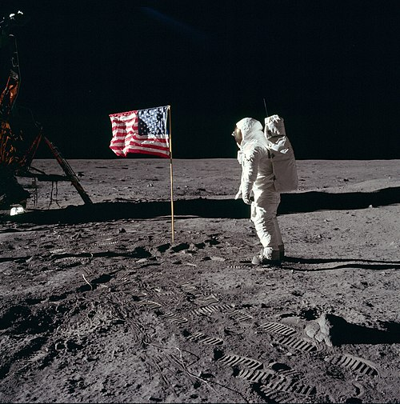

การขยายตัวของโลกตะวันตก: ยุคอาณานิคม (ศตวรรษที่ 15-21)
ยุคสมัยใหม่ตอนต้น ตั้งแต่ปลายศตวรรษที่ 15 ถึงศตวรรษที่ 17 วัฒนธรรมตะวันตกเริ่มแพร่กระจายไปยังส่วนอื่นๆ ของโลกผ่านนักสำรวจและมิชชันนารีในช่วงยุคแห่งการค้นพบและโดยจักรวรรดินิยมตั้งแต่ศตวรรษที่ 17 ถึงต้นศตวรรษที่ 20 ในช่วงการแยกตัวครั้งใหญ่ ซึ่งเป็นคำที่ซามูเอล ฮันติงตันบัญญัติขึ้น โลกตะวันตกเอาชนะข้อจำกัดการเติบโตก่อนยุคสมัยใหม่และปรากฏตัวขึ้นในช่วงศตวรรษที่ 19 ในฐานะอารยธรรม โลกที่ทรงอำนาจและร่ำรวยที่สุด ในเวลานั้น แซงหน้าจีนสมัยราชวงศ์ชิง อินเดียสมัยราชวงศ์โมกุล ญี่ปุ่นสมัยราชวงศ์โทกูงาวะ และจักรวรรดิออตโตมัน กระบวนการนี้เกิดขึ้นควบคู่ไปกับและได้รับการเสริมแรงจากยุคแห่งการค้นพบและดำเนินต่อไปจนถึงยุคสมัยใหม่ นักวิชาการได้เสนอทฤษฎีที่หลากหลายเพื่ออธิบายว่าทำไมการแยกตัวครั้งใหญ่จึงเกิดขึ้นรวมถึงการขาดการแทรกแซงของรัฐบาล ทุนทางสังคมที่เชื่อมโยงกันสูง ภูมิศาสตร์ ลัทธิอาณานิคม และประเพณีดั้งเดิม ยุคแห่งการค้นพบค่อยๆจางหายไปสู่ยุคแห่งการตื่นรู้ในศตวรรษที่ 18 ซึ่งในช่วงเวลานั้น พลังทางวัฒนธรรมและปัญญาในสังคมยุโรปเน้นย้ำถึงเหตุผล การวิเคราะห์ และปัจเจกนิยม มากกว่าสายอำนาจแบบดั้งเดิม มันท้าทายอำนาจของสถาบันที่หยั่งรากลึกในสังคม เช่น โบสถ์คาทอลิก มีการพูดคุยกันมากมายเกี่ยวกับวิธีการปฏิรูปสังคมด้วยความอดทน วิทยาศาสตร์ และความสงสัย
การปฏิวัติอุตสาหกรรม เครื่องยนต์ไอน้ำของวัตต์เครื่องยนต์ไอน้ำที่ทำจากเหล็กและใช้ถ่านหินเป็นเชื้อเพลิงหลัก ได้ขับเคลื่อนการปฏิวัติอุตสาหกรรมในสหราชอาณาจักรและทั่วโลก การปฏิวัติอุตสาหกรรม คือการเปลี่ยนผ่านไปสู่กระบวนการผลิตใหม่ในช่วงประมาณปี 1760 ถึงช่วงระหว่างปี 1820 ถึง 1840 ซึ่งรวมถึงการเปลี่ยนจากวิธีการผลิตด้วยมือไปเป็นเครื่องจักร กระบวนการผลิตทางเคมีและการผลิตเหล็กแบบใหม่ การปรับปรุงประสิทธิภาพของพลังงานน้ำการใช้พลังงานไอน้ำที่เพิ่มมากขึ้น และการพัฒนาเครื่องมือกล การเปลี่ยนแปลงเหล่านี้เริ่มต้นในสหราชอาณาจักรและแพร่กระจายไปยังยุโรปตะวันตกและอเมริกาเหนือภายในไม่กี่ทศวรรษ การปฏิวัติอุตสาหกรรมถือเป็นจุดเปลี่ยนครั้งสำคัญในประวัติศาสตร์ มาตรฐานการครองชีพของประชากรทั่วไปเริ่มเพิ่มขึ้นอย่างต่อเนื่องเป็นครั้งแรกในประวัติศาสตร์ ซึ่งพัฒนาไปสู่การปฏิวัติอุตสาหกรรมครั้งที่สองในช่วงเปลี่ยนผ่านระหว่างปี 1840 ถึง 1870 เมื่อความก้าวหน้าทางเทคโนโลยีและเศรษฐกิจดำเนินต่อไปด้วยการนำระบบขนส่งด้วยไอน้ำมาใช้มากขึ้น (รถไฟไอน้ำ เรือ และเรือเดินสมุทรที่ใช้พลังงานไอน้ำ) การผลิตเครื่องมือกลขนาดใหญ่ และการใช้เครื่องจักรในโรงงานที่ใช้พลังงานไอน้ำเพิ่มมากขึ้น
ยุคหลังอุตสาหกรรม ระหว่างปี 1945 ถึง 1980 โลกตะวันตกได้ผ่านการเปลี่ยนแปลงทางวัฒนธรรมและสังคมครั้งใหญ่ สื่อมวลชนที่เกิดขึ้นใหม่ (ภาพยนตร์ วิทยุ โทรทัศน์) ได้สร้างวัฒนธรรมระดับโลกที่สามารถละเลยพรมแดนของประเทศต่างๆ ได้ การรู้หนังสือแพร่หลายมากขึ้น ส่งเสริมการเติบโตของหนังสือ นิตยสาร และหนังสือพิมพ์ อิทธิพลของภาพยนตร์และวิทยุยังคงอยู่ ในขณะที่โทรทัศน์กลายเป็นสิ่งจำเป็นในทุกบ้าน ในช่วงกลางศตวรรษที่ 20 วัฒนธรรมตะวันตกได้ถูกส่งออกไปทั่วโลก และการพัฒนาและการเติบโตของการขนส่งและการสื่อสารระหว่างประเทศ (เช่นเคเบิลข้ามมหาสมุทรแอตแลนติกและโทรศัพท์วิทยุ ) มีบทบาทสำคัญอย่างยิ่งต่อโลกาภิวัตน์สมัยใหม่ ตะวันตกได้มีส่วนร่วมอย่างมากในด้านเทคโนโลยี การเมือง ปรัชญา ศิลปะ และศาสนาต่อวัฒนธรรมสากลสมัยใหม่ โดยเป็นแหล่งกำเนิดของศาสนาคาทอลิกศาสนาโปรเตสแตนต์ประชาธิปไตย และอุตสาหกรรม เป็นอารยธรรมหลักแรกที่พยายามยกเลิกการเป็นทาสในช่วงศตวรรษที่ 19 และเป็นอารยธรรมแรกที่นำเทคโนโลยีต่างๆ มาใช้ เช่น พลังงานไอน้ำ พลังงานนิวเคลียร์ตะวันตกคิดค้นภาพยนตร์ โทรทัศน์ คอมพิวเตอร์ส่วนบุคคล อินเทอร์เน็ต และวิดีโอเกม พัฒนากีฬาต่างๆ เช่น ฟุตบอลคริกเก็ตกอล์ฟเทนนิสรักบี้บาสเกตบอล วอลเลย์บอล ส่งมนุษย์ไปยังวัตถุทางดาราศาสตร์ เป็นครั้งแรกด้วย ภารกิจ ลงจอดบนดวงจันทร์ของ ยาน อวกาศอะพอลโล 11 ในปี 1969 ในปัจจุบันศตวรรษที่ 21 ทั้งโลกได้อยู่ในยุคโลกออนไลน์ จากระบบอินเทอร์เน็ต
วัฒนธรรมตะวันออก
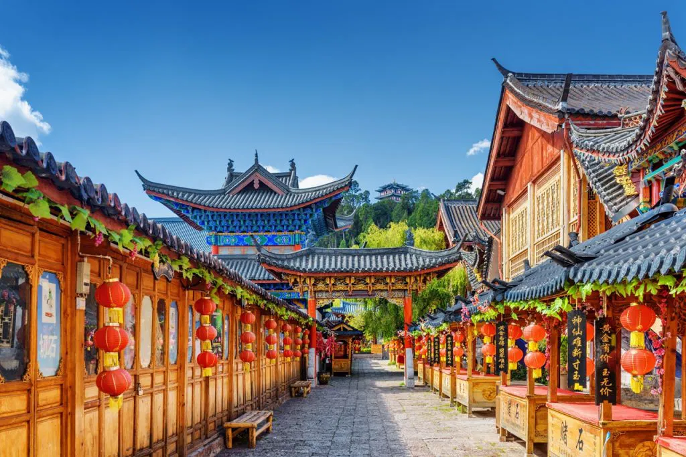
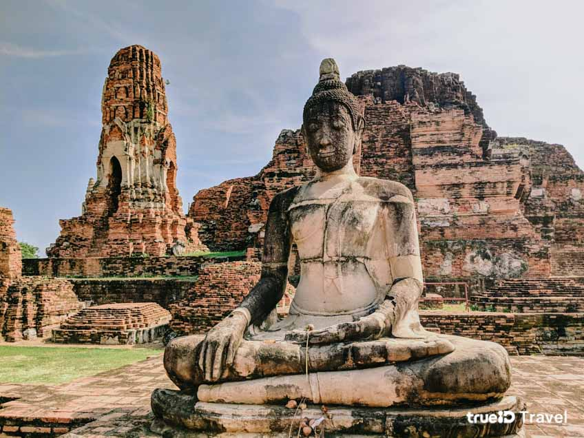
โลกตะวันออกหรือที่รู้จักกันในชื่อตะวันออกหรือในเชิงประวัติศาสตร์ว่า โอเรียนต์เป็นคำที่ใช้เรียกโดยรวมของวัฒนธรรมหรือโครงสร้างทางสังคมประเทศชาติ และระบบปรัชญา ต่างๆ ซึ่งแตกต่างกันไปตามบริบท โดยส่วนใหญ่มักรวมถึงเอเชียภูมิภาคเมดิเตอร์เรเนียนและโลกอาหรับโดยเฉพาะในบริบททางประวัติศาสตร์ (ก่อนสมัยใหม่) และในยุคปัจจุบันในบริบทของลัทธิโอเรียนทัลลิสม์บางครั้ง คำนี้อาจรวมถึงประเทศต่างๆ ในยุโรปตะวันออกและบอลข่านด้วยโลกตะวันออกมักถูกมองว่าเป็นคู่ตรงข้ามกับโลกตะวันตก ภูมิภาคต่างๆ ที่รวมอยู่ในคำนี้มีความหลากหลาย ยากที่จะสรุปโดยรวม และไม่มีมรดกร่วมกันเพียงอย่างเดียว แม้ว่าส่วนต่างๆ ของโลกตะวันออกจะมีจุดร่วมหลายอย่าง โดยเฉพาะอย่างยิ่งการอยู่ใน "ซีกโลกใต้ " แต่ในทางประวัติศาสตร์แล้ว พวกเขาไม่เคยนิยามตนเองร่วมกันมาก่อน คำนี้เดิมทีมีความหมายทางภูมิศาสตร์ตามตัวอักษร หมายถึงส่วนตะวันออกของโลกเก่าโดยเปรียบเทียบวัฒนธรรมและอารยธรรมของเอเชียกับของยุโรป (หรือโลกตะวันตก ) ตามธรรมเนียม แล้วจะรวมถึงเอเชียตะวันออก เอเชียตะวันออกเฉียงใต้ เอเชียใต้เอเชียกลาง และเอเชียตะวันตก
ในเชิงแนวคิด ขอบเขตระหว่างตะวันออกและตะวันตกเป็นเรื่องทางวัฒนธรรมและประวัติศาสตร์มากกว่าทางภูมิศาสตร์ ส่งผลให้ออสเตรเลียและนิวซีแลนด์ซึ่งก่อตั้งขึ้นเป็น อาณานิคมของ ผู้ตั้งถิ่นฐานชาวอังกฤษมักถูกจัดกลุ่มอยู่กับโลกตะวันตก แม้ว่าในทางภูมิศาสตร์จะอยู่ใกล้กับโลกตะวันออกมากกว่า ในขณะที่ประเทศในเอเชียกลางของอดีตสหภาพโซเวียตแม้จะมีอิทธิพลจากตะวันตกอย่างมาก ก็ยังถูกจัดกลุ่มอยู่ในตะวันออกนอกเหนือจากเอเชียและแอฟริกา ส่วนใหญ่แล้ว ยุโรปได้ดูดซับสังคมเกือบทั้งหมดของเอเชียเหนืออเมริกาและโอเชียเนียเข้าสู่โลกตะวันตกเนื่องจาก การตั้ง อาณานิคมของผู้ตั้งถิ่นฐาน ในบางประเทศ เช่น ฟิลิปปินส์ ซึ่งตั้งอยู่ในโลกตะวันออก อาจถือได้ว่าเป็นประเทศตะวันตกในบางแง่มุมของสังคม วัฒนธรรม และการเมือง เนื่องจากการอพยพและการตกเป็นอานาณิคมอย่างยาวนาน ทำให้ได้รับอิทธิพลทางวัฒนธรรมในอดีตจากสหรัฐอเมริกาและยุโรปตะวันตก
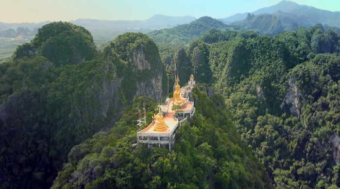
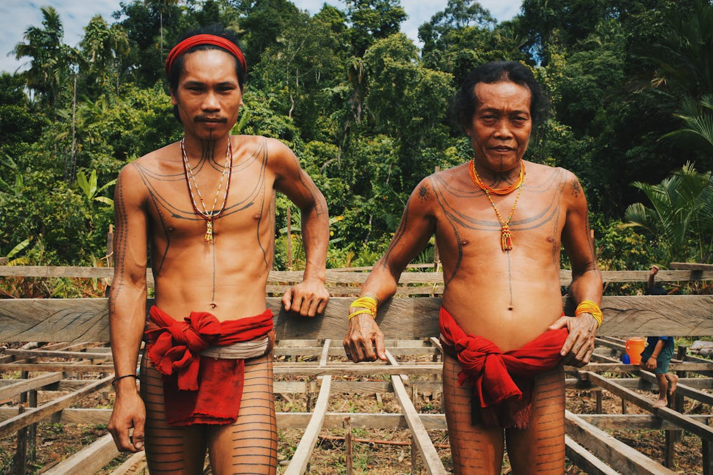